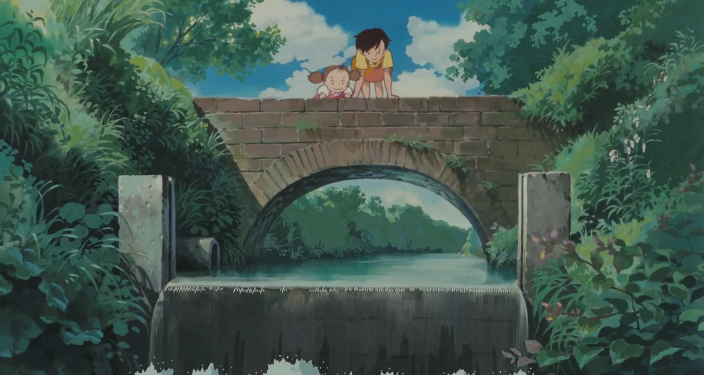
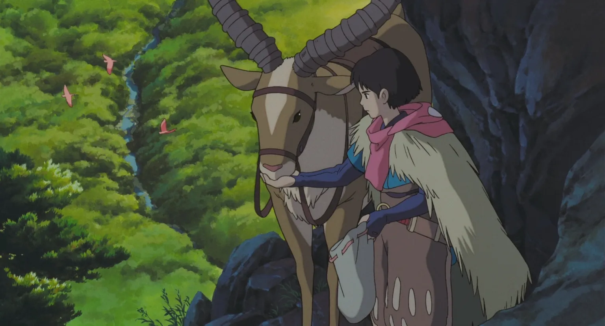
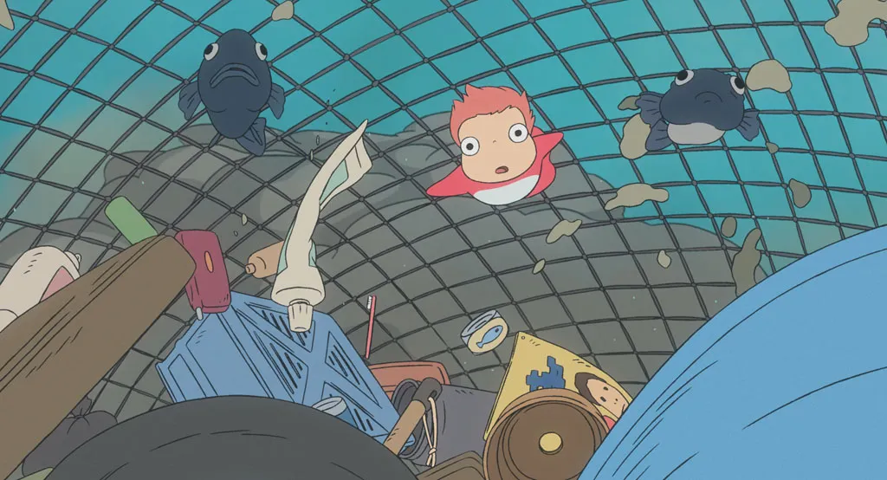
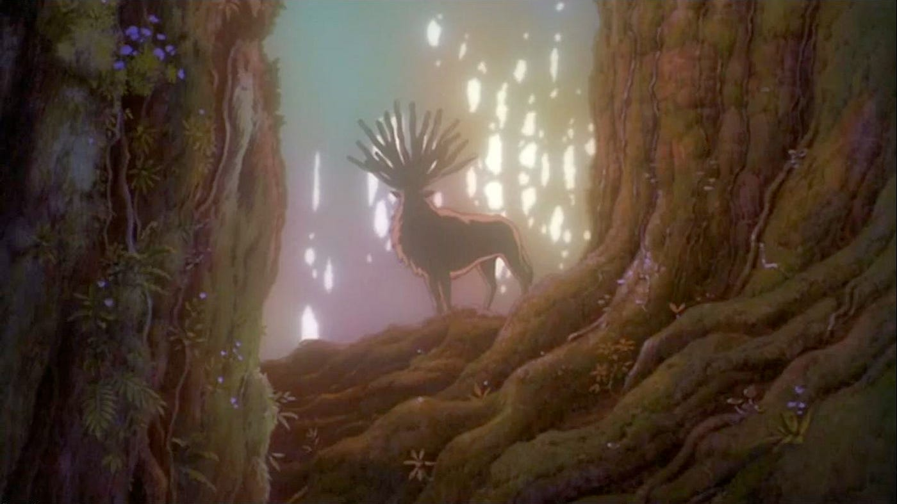

O Studio Ghibli e a questão ambiental.
Com a questão ambiental em alta, não poderíamos deixar de citar o Studio Ghibli como um dos grandes defensores da natureza. De uns tempos pra cá, cada vez mais o cinema tem discutido os problemas do planeta, documentários e filmes como Avatar, tem trazido o assunto para a pauta de discussões.
O Studio Ghibli, para nós aqui, é um dos grandes expoentes desse assunto, e hoje falaremos um pouco dos filmes que já abordaram a questão ambiental.
NAUSICAÄ DO VALE DO VENTO
Embora Nausicaä seja um filme pré Ghibli (antes da fundação do Studio Ghibli), este filme mostra que a preocupação de Hayao Miyazaki com o meio ambiente é antiga.
O filme estreou em 1984, e conta a história de um dos povoados que sobrou após uma guerra apocalíptica. O Vale dos Ventos é um dos pouco países pacíficos que resta após a Guerra dos Sete Dias de Fogo, e se vê mais uma vez envolvido em disputas territoriais.
O filme mostra que, embora o mundo já esteja arrasado pela última guerra, os homens continuam a guerrear por questões territoriais. A Guerra dos Sete Dias de Fogo causou a perda de tecnologia, muita poluição, e os sobreviventes devem conviver com o Mar Podre, uma Floresta tóxica, cujo ar pode matar em segundos qualquer ser humano.
Digamos que, na rapidez com que o homem está consumindo e poluindo, não estamos muito longe disso. Há terras que já não produzem mais (como por exemplo, as terras em volta do Mar de Aral) e vários países já sofrem com a falta de água.
Existe um cálculo que é feito que mede quanto o planeta pode produzir por ano, dentro de um limite sustentável. Ano passado (2009), em setembro já havia atingido o limite, o que quer dizer que o restante dos meses estávamos utilizando recursos que deveriam pertencer ao ano seguinte.
MEU AMIGO TOTORO
Embora Totoro não seja exatamente um filme com a temática ambiental, a floresta na qual a história de Totoro foi baseada é hoje alvo de campanhas em todo o mundo, pois recentemente tentaram acabar com a floresta. Várias campanhas foram feitas e atualmente, a Floresta do Totoro, como foi carinhosamente chamada, está a salvo.
PRINCESA MONONOKE
Em 1997, novamente Miyazaki retoma a questão ambiental. Dessa vez, vemos uma vila humana que devasta a floresta dos espíritos antigos em busca de ferro, que rendia muito dinheiro para a vila. Ashitaka, o príncipe de uma aldeia distante e esquecida, viaja na direção dessa floresta para julgar com o coração quem está correto.
Apesar da vila desmata a floresta e causar uma exploração brutal do solo, vemos que a líder, Eboshi, tem boas intenções. Ela quer tornar a vida dos moradores da vila melhor, cuida dos leprosos, compra os contratos da mulheres que seriam vendidas para prostituição. O filme mostra também que, uma vez alterada, a natureza não poderá a ser como antes.
PONYO – UMA AMIZADE QUE VEIO DO MAR
A ideia de Ponyo também não é exclusivamente a questão ambiental, mas ela está lá, escondida. Ponyo só conhece Sosuke porque fica presa dentro de um pote de vidro. O que um pote de vidro deveria estar fazendo no fundo do mar?
No filme, há barcos com redes, cujo objetivo principal parece ser retirar todo o lixo que está no fundo do mar. Na maioria das vezes, não paramos pra pensar que, jogando o lixo na rua, esse lixo vai parar nos boeiros, e durante uma enchente, pode muito bem voltar pra nossa casa.
Como sugerido em Nausicaä, não sabemos exatamente como irá se desenrolar a partir disso a crise climática, a perda da biodiversidade, a insurgência e mutação de variados vírus e bactérias, nem o quão comprometidos estarão os reservatórios de água doce do planeta, a produção de alimentos, a qualidade do ar e a capacidade dos oceanos combaterem a acidificação que os assola. De fato não sabemos responder o que poderia se passar com a Terra a partir disso. Assim como no momento em que Ashitaka e Mononoke devolvem ao Deus da Natureza, ao Espírito da Floresta Sagrada, sua própria cabeça que havia sido arrancada pelos exploradores de recursos naturais, o que foi destruído provavelmente não se recupere, e se perca para sempre. Mas de qualquer modo os processos destrutivos são interrompidos e novas relações podem ser imaginadas.
